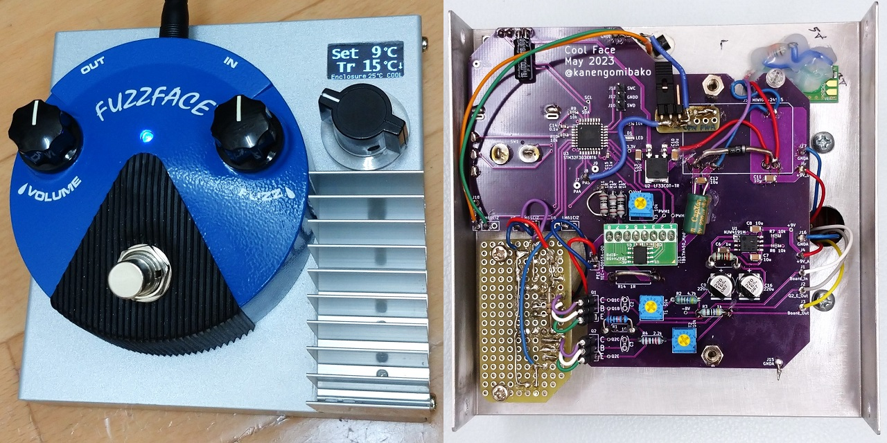
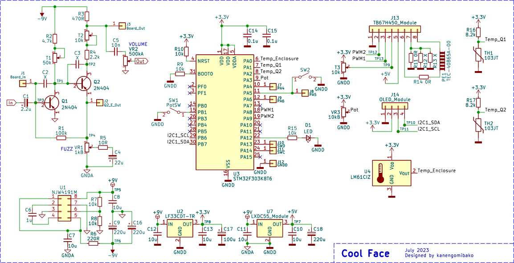
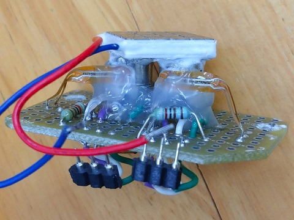
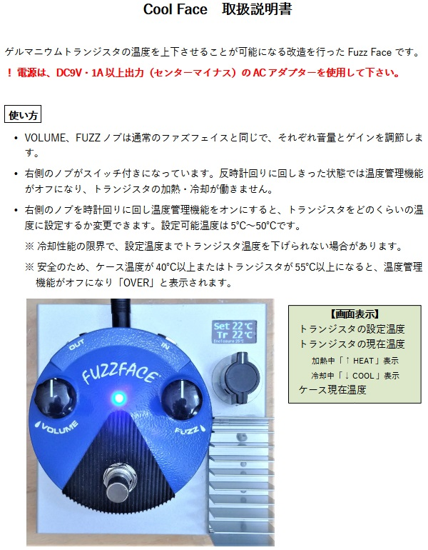

Cool Face
2023年10月13日 カテゴリー：修理・改造・解析

第2回改造エフェクターコンテストに向け、デジタル制御で温度管理ができるゲルマニウムファズを製作しました。ゲルマニウムトランジスタを温めるファズとしてはBenson Amps Germanium Fuzzがすでにあったので、アイデアとしては特に目新しくはないかもしれません。しかしながら、ペルチェ素子という加熱と冷却両方可能な部品をいつか使ってみたいと思っていたのでいい機会でした。
オリジナルの自作エフェクターでも応募可能だったのですが、やはり見た目のインパクトは重要だろうということで、たまたま安く手に入ったFFM1 SILICON FUZZ FACE MINIを利用することにしました。ペルチェ素子は本体の片側に放熱器を付ける必要があるため、必然的にケースを別途取り付けるという大掛かりな形になりました。
▽回路図

FFM1はバイパス部分を利用していますが、メインの回路はほぼ別物で、別途負電源も準備しています。マイコンは使い慣れているSTM32です。
- ペルチェ素子
ペルチェ素子の加熱と冷却を入れ替えるには、電流の向きを逆にする必要があります。MOSFETのスイッチを4つ使って反転させる…などと考えていると、モーター制御の仕組みに似ていることに気が付き、TB67H450モータドライバモジュールを利用することにしました。TB67H450には定電流制御機能というのがありますが、この機能は無効にしてマイコンのPWMで電流を制御しています。急な電流の切替はノイズの元になりそうなので、設定温度に近づくとパワーを弱めるようになっています。また、消費電流が1Aだと使えるパワーサプライが限られてしまうので、500mAに消費電流を抑えるジャンパーを設けてあります。
- 温度センサ
最初はケースとトランジスタ2個の全てに温度センサLM61CIZを使うようにしていましたが、どうも温度変化に対する反応が遅いようだったので、トランジスタについては超薄型サーミスタ（103JT-025）に変更しました。SEMITEC社のサーミスタ製品情報ページに組み合わせる抵抗（R16、R17）の計算方法が掲載されており、この抵抗とサーミスタをマイコンのADCに接続して温度を計算します。以前製作したBright MuffのようにADCを高速に設定し、ADC完了割り込みのタイミングで発生するノイズを可聴域外になるようにしています。
- ゲルマニウムトランジスタ
温度センサを取り付けるのにちょうどよさそうな放熱器付きAC128Kというのが販売されていたので、最初はこれをいくつか買ってみましたが、どれもリーク電流が多く大ハズレでした。選別するのが嫌になったので、桜屋電機店にあった低リーク電流の2N404を使うことにしました。これに放熱用シリコン接着剤でペルチェ素子やサーミスタを取り付けています。

Q1はhFE62 リーク電流113uA、Q2はhFE83 リーク電流33uAです（約21℃での値）。音色変化が大きくなることを狙って、敢えて初段のトランジスタにリーク電流が多い方を使っています。
- 電源部
デジタル側の消費電力が大きくノイズが心配だったので、最初は手持ちにあった絶縁型DC-DCコンバータMIWI06-24S05を使っていました。絶縁型とはいえどこかにグラウンドを接続する必要があるわけですが、どこに接続してもノイズが消えない状態になっていました。そこで絶縁型ではないLXDC55使用DC-DCコンバータに変更した所、ノイズは問題ないレベルになりました。絶縁型DC-DCコンバータはそれ自体のノイズがあるということなので、使いどころが難しいとわかりました。
▽取扱説明書
コンテスト応募時に同封した説明書です。

内部にバイアス電圧調整トリマーがあるので、ある程度自由に音色調整できます。今回はコンテスト用に25℃付近でFFM1の元の音に近いように調整しました。温度が低い時にはゲインが少なくなりやや大人しい感じに、温度が高いと激しい感じの音色に聞こえるかと思います。温度が40℃を超えてくると、リーク電流が大きくなる影響でブチブチとした感触となります。
第２回改造エフェクターコンテスト第１次審査突破作品紹介動画【Part.1】の最後の方で本機が紹介されています。
最終審査の結果、BARKS賞をいただきました！以下にインタビュー記事が掲載されています。
・＜第2回改造エフェクターコンテスト＞BARKS賞は、温度管理でサウンド激変の奇怪マシーン